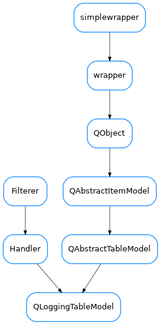

QLoggingTableModel¶

-
class
QLoggingTableModel(parent=None, capacity=500000, freq=0.25)[source]¶ Bases:
PyQt5.QtCore.QAbstractTableModel,logging.Handler-
DftColSize= (PyQt5.QtCore.QSize(80, 20), PyQt5.QtCore.QSize(200, 20), PyQt5.QtCore.QSize(300, 20), PyQt5.QtCore.QSize(180, 20), PyQt5.QtCore.QSize(240, 20))¶
-
DftFont= <PyQt5.QtGui.QFont object>¶
-
close()[source]¶ Tidy up any resources used by the handler.
This version removes the handler from an internal map of handlers, _handlers, which is used for handler lookup by name. Subclasses should ensure that this gets called from overridden close() methods.
-
emit(record)[source]¶ Do whatever it takes to actually log the specified logging record.
This version is intended to be implemented by subclasses and so raises a NotImplementedError.
-
flush()[source]¶ Ensure all logging output has been flushed.
This version does nothing and is intended to be implemented by subclasses.
-
QLoggingTableModel.insertRows(self, int, int, parent: QModelIndex = QModelIndex()) -> bool[source]
-
QLoggingTableModel.removeRows(self, int, int, parent: QModelIndex = QModelIndex()) -> bool[source]
-